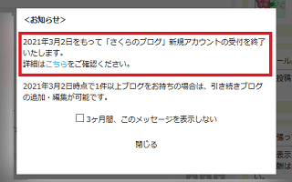
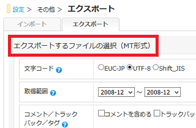
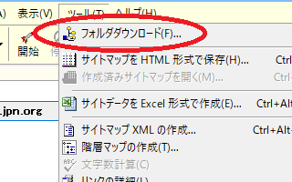
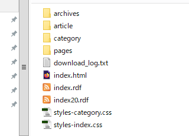
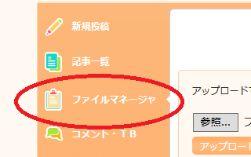
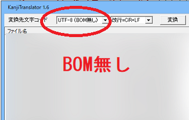
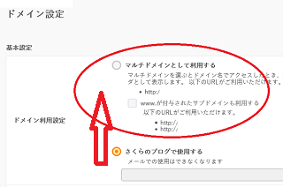

さくらのブログからの引越方法
以前から「さくらのブログ」で更新していたのですが、こちらは2021年3月2日をもって新規アカウントの受付が終了するとのことです。

既存のブログは今後もそのまま更新できるとは思いますが、これを機にレンタルサーバーへと引越すことにしました。
この「さくらのブログ」は、さくらインターネットのレンタルサーバーを契約していれば無料で使えるブログサービスですが、Seesaaブログとほぼ同様の仕様になっており、ファイルは「.html」の形式で出力されます。
そのため、静的なHTMLファイルが出力されるMovable Typeとの相性がよいと思いますが、当サイト運営者はさくらインターネットのレンタルサーバーへ移転し、ホームページソフトのDreamweaverで更新することにしました。
もしCMSブログで更新する場合は、さくらのブログではMT形式での記事のエクスポートができるため、レンタルサーバーにMovable Typeを設置したのち、記事をインポートして移転することをおすすめします。

WordPressでも出力するファイル形式を「.html」に設定したのち、手作業で記事をコピペで再投稿していけば可能かもしれません。
- さくらのブログ → Movable Type（記事のエクスポート可）
- さくらのブログ → WordPress（コピペで再投稿）
- さくらのブログ → ホームページ作成ソフト
当サイト運営者はレンタルサーバー側へと移動し、ホームページ作成ソフトで更新することにしたのでその手順についてご紹介します。
さくらのブログをレンタルサーバーに移転する方法
さくらのブログを移転する際、自分の独自ドメインで作成していたのか、運営提供によるサブドメインで作成していたのか、あるいはデフォルトの「任意の英数.sblo.jp」で作成していたのかで違いがあります。
- 独自ドメイン
- さくらインターネット所有のサブドメイン
- デフォルトの「任意の英数.sblo.jp」
さくらインターネットのサブドメインで作成していた場合は、さくらインターネットで利用するしかありませんが、独自ドメインで作成していた場合は他のレンタルサーバーへ移転しても問題ないかと思います。
「任意の英数.sblo.jp」で作成していた場合は転送設定が必要になりますが、こちらのページが参考になるかもしれません。
→ 無料ホームページからレンタルサーバーへの引越方法
今回は運営提供のサブドメインで利用していたさくらのブログを移転する方法についてご紹介しますが、移転後はホームページ形式で更新していくことになるため、何らかのホームページ作成ソフトを持っていることが前提になります。
■①ホームページファイルのダウンロード
まずはさくらのブログのファイルをダウンロードしますが、Website Explorerを使ってダウンロードするとよいでしょう。

さくらのブログの場合、おおむね、このような感じになっているはずです。

このほか、imageなどの画像フォルダも作成したのち、ファイルマネージャーから画像のURLにアクセスし、右クリックで画像をダウンロードしておくことをおすすめします。

「pages」のフォルダについては詳細が不明ですが、もしかしますと、昔のガラケーサイト用のフォルダなのかもしれません。当サイト運営者はこのフォルダは削除しましたが、残しておいても問題ないかと思います。
ホームページファイルのダウンロードが完了しましたら、ファイルを修正する前に、フォルダごと全てのファイルのバックアップをとっておくことをおすすめします。
■②DTDと文字コードの変換
当サイト運営者の場合、DTDが「Shift_JIS」の「XHTML 1.0」だったため、「utf-8」の「HTML5」に変更しておきました。
→ HTML5への修正方法
「XHTML 1.0」のままでも問題ないとは思いますが、できるだけ最新のDTDに修正しておくとよいでしょう。
文字コードも変更する際は、まずはHTMLファイルのDTDの箇所の「encoding="Shift_JIS"」や「charset=Shift_JIS"」などを「HTML5」の「utf-8」に修正します。その後に、KanjiTranslatorなどの一括変換ツールなどを使い、フォルダごとファイル自体の文字コードを「BOMなし（UTF-8N）」に変換するとよいでしょう。

この順序を間違えると文字化けしてファイルが使えなくなるため、必ずバックアップをとってから実行されることをおすすめします。
■③スマホ用の設定を削除
次に、HTMLファイル内に記載されているスマホ用の設定を削除し、レスポンシブウェブデザインでスマホに対応することをおすすめします。idがiphone-linkなどとなっている<div>要素やスマホ表示用のスクリプトなどを削除するとよいでしょう。
もし余力があれば、OGPタグやAMPページ、あるいは構造化データなどにも対応しておくとよいかもしれません。
■④内部リンクの修正
サイト内で記載している画像のURLは、運営サービス側のURLとなっているはずですので、上記で作成したimageなどの画像フォルダのURLへと修正します。
■⑤ファイルのアップロードと公開フォルダの変更
ホームページファイルの修正が完了しましたら、さくらのレンタルサーバーのファイルマネージャーにて任意の公開フォルダを作成したのち、そちらへアップロードします。
アップロードが完了しましたら、管理画面にてそのフォルダへドメインの設定を変更します。

当サイト運営者の場合、この設定はすぐに反映されましたが、実際にサイトにアクセスして正常に表示されるかを確認します。上記のWebsite Explorerではエラーや外部リンクもチェックできますので、おかしな点がないかをチェックしておくとよいでしょう。
運営提供のサブドメインで利用している場合、無料SSLは利用できませんが、独自ドメインで利用している場合は無料SSLの設定もしておくことをおすすめします。さくらインターネットのサブドメインを利用している場合、これを機に独自ドメインを取得して301リダイレクトする形でリニューアルするのもよいかと思います。
上記のように、HTML5やレスポンシブウェブデザイン、OGPタグ、AMPページ、構造化データ、無料SSLなどに対応することにより、もしかしますと多少はアクセスアップにつながるかもしれません。